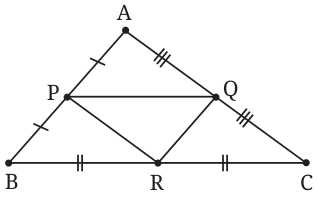
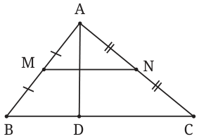
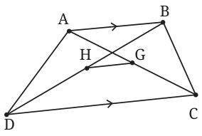
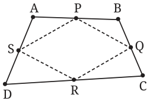
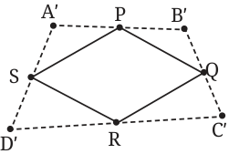

- 1.
- (i)If P, Q, R are the midpoints of sides AB, AC, BC respectively of \(\triangle ABC\), show that \(\triangle PQR\) is congruent to \(\triangle QPA\) and to two other triangles which you should identify.
- (ii)Suppose someone erases \(\triangle ABC\), leaving only \(\triangle PQR\) on the paper. Can you reconstruct \(\triangle ABC\) from \(\triangle PQR\)?

Fig. 12.22 - 2.In \(\triangle ABC\), let M and N be midpoints of AB and AC respectively. Let D be any point on BC. Show that MN bisects AD.

Fig. 12.23 - 3.In a quadrilateral ABCD, suppose \(AB \parallel DC\) and \(AB \ne CD\). Suppose G and H are the midpoints of AC and BD respectively. Prove that \(GH \parallel AB\). (Why did we assume \(AB \ne CD\)?)

Fig. 12.24 - 4.Suppose the midpoints of sides AB, BC, CD and DA of a quadrilateral ABCD are P, Q, R and S respectively.
- (i)Show that PR and QS bisect each other.
- (ii)Show that if \(AC = BD\), then PR and QS are perpendicular. Is the converse true?
- 5.Suppose PQRS is the Varignon parallelogram of ABCD.


Fig. 12.25 - (i)Copy only PQRS on another paper. Show how you will recreate a congruent copy A′B′C′D′ of ABCD from PQRS. This will be relevant when we return to study tilings at the end of this chapter. (Hint: How will you place vertex A′? How will you place B′, C′ and D′?)
- (ii)There are multiple ways to construct A′B′C′D′ in (i). Justify why the quadrilateral A′B′C′D′ you constructed is congruent to ABCD. You may need to show why S is collinear with the points A′ and D′ that you constructed, and similarly for P, Q and R. (Hint: Use congruence of triangles, for example \(\triangle SDR \cong \triangle SD'R\).)
- (iii)Show that if PQRS is a square, then AC and BD are perpendicular and equal. Prove the converse.